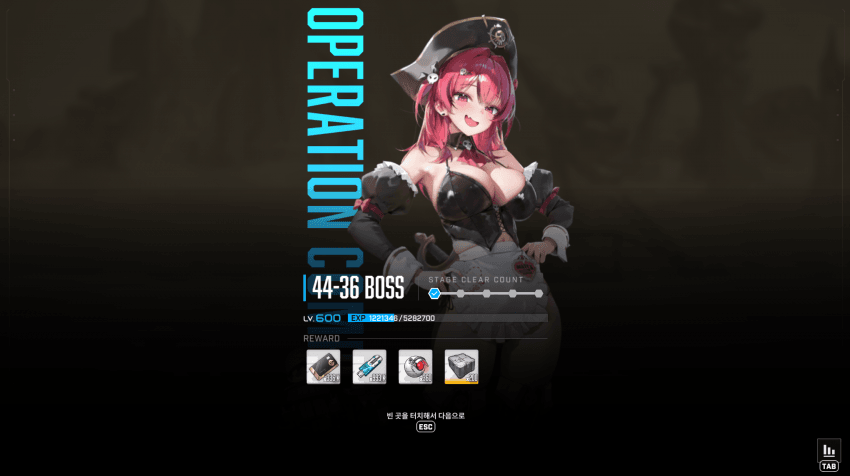
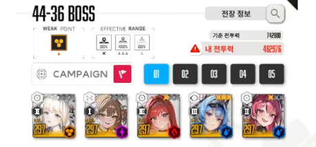
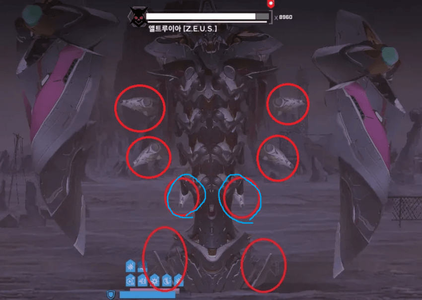
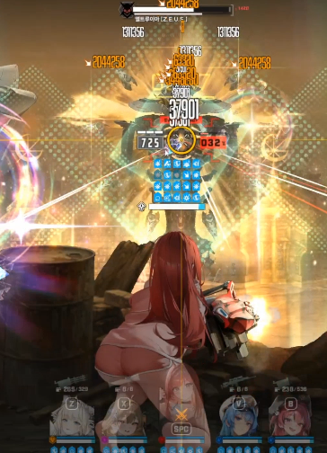
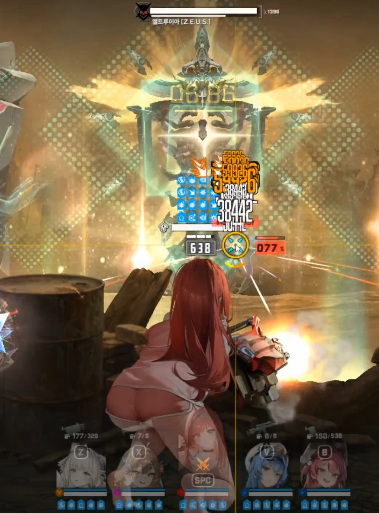
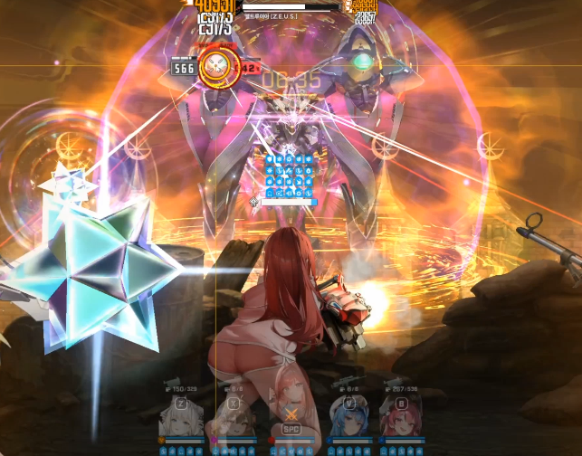

아니스를 기용한 MZ 조합임
3줄요약
1. 머신건 적정 거리
2. 첫번째 코코볼은 ESC 수동태보
3. 첫 6코볼 끝날때 버스트 쓰기 // 파동 1번 몸으로 맞기
하드때 상기할겸 작성해봄
앨트루이아는 철갑이라 갤주 라삣삐는 무조건 들어갈텐데
이때 머신건 적정거리가 필수임
하고 안하고의 딜차이가 생각보다 있음
챈펌 이미지 빨간원은 머신건 적정 거리임
개인적으로는 파란원 있는 파츠를 치는게 편했음

적정거리X 일시 37901

적정거리ㅇ 일시 38442

첫 코코볼인데 이유는 모르겠는데 첫 코코볼은 무조건 개별엄폐해야함
전체엄폐로 하니까 두번째 날아오는건 엄폐 무조건 까여서 화가 잔뜩 났었음
나 같은 늙은 할배는 반응속도 안대니까 날아오는거보고 esc로 개별엄폐해주면댐
이거 다음에 속저 나올텐데 최대한 늦게 해주면댐 마지막원 대충 10시~11시 정도일때 했음
여기서 늦게해줘야 뒤에 암전저지전 버충이 편함

암전저지 파트임
헬름으로 풀차징잡고 들어가기전에 꽂아주고 가면 편함
암전 터지고 바로 사라지는건 아니여서 생각보다 여유는 있음
못할거 같으면 ESC컨해도댐
암전저지안에 들어가서 버충 나머지하고 버스트 돌리기
이제 저지 후 딜탐 가지고나서 첫 6코코볼인데
엄폐는 그냥 전체엄폐 해주면댐 왜 여긴 전체엄폐가 먹히는지 모르겠네
패턴때 버스트 쓰지말고 끝날때 버스트 써주면 댐
코코볼 끝나고 파동같은거 날아오는데 한번은 몸으로 맞아야 2번째 6코볼때까지 엄폐살릴 수 있음
그 다음부터는 파츠생성 - 코코볼 이고
코코볼 상관없이 그냥 버스트 계속 돌려주면댐
추가로 코코볼 끝나고 파동에서 리듬 맞춰서 엄폐 와리가리하면서 톡톡 치는법도 있는데 피곤해서 안했삼..
영상요청 있어서 추가했삼